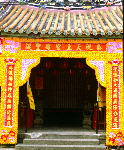

呂清夫 撰文

每逢慶典，我們的大街小巷、機關學校，常可看到血紅色的牌樓，十年如日，即使在都市充滿水泥叢林的今天，主其事者仍舊樂此不疲，似乎非要來個血紅的牌樓，即不足以言慶祝。連「東門」那樣的古蹟，也被妝點得而目全非，至於美術館的大門，亦不能免俗地，來一塊血紅的看板。美術是講究創新的，因之，我曾建一美術館能不能免去這個俗套。在從前的農業時代，到處是綠油油的、靜悄悄的，如有喜事節慶，門楣上掛一塊紅綵，於是萬綠叢中幾點紅，可以說滿富於詩意的，也滿有喜氣的。可是今天已不相同，鄉村已經都市化，都市亦幾乎寸草不留，加上擁擠的交通、污染的空氣、炎熱的氣候，於是任何一塊血紅色的看板，不但未必能增添喜氣興詩意，反而可能火上加油，亂上加亂。據心理學的研究，紅色含使人感到溫熱，脈搏加快，長期住在血紅的房間，更可能令人發瘋。紅色由於讓人聯想到火或血，所以在現代生活中，常被用作「危險險」或禁止通行的標誌，這當然也因為紅色較能引起眼睛的注意。但是日常生活中如果出現太多的紅色，是不是會引發人們心理的緊張呢？主其事者或許會說，慶典使用紅色牌樓乃是順應民俗或民情，至於是不是真能「順應」恐怕有待於民意調查，一般而言，人們第一個反應恐怕是無所謂，但是如果知道要花很多錢，恐怕都不會同意做什麼牌樓的。我們看花都巴黎的國慶並沒有搭建什麼樓，凱旋門也不加什麼妝點，卻無損於她的喜氣與壯麗。與紅色相近的朱色在中國古代確實是吉祥、喜氣、貴族的象徵。但朱色的成分是硫化汞，由於雜質與技術的關係，朱色總不會像今天的血紅那麼刺眼，因為血紅是化工漆料，純度與技術都勝過以往。然而，太過刺眼的血紅放在都市�堶惜浀虓奶ㄗ騣捸A反而顯得很土。如果農業社會使用的是不太刺眼的朱色，那麼工商社會使用的應是更不刺眼的顏色才對。不僅牌樓，目前不少都市建築的柱子也常被塗成血紅，這也是令人難受的配色。考其原意，可能是要強譎一種傳統色彩、甚至豪門氣象。但是古代皇宮的﹁丹楹」（柱子塗丹）使用的顏料常是丹粉或鉛丹，成分是氧化鉛，故比朱色更不鮮艷，更為柔和。反觀今天街上的紅色柱子，則一概是西式的血紅色，其令人看了血壓升高、心情焦躁實人有可能。古人云，誰知心兒亂，看朱忽成碧，朱色看久了，由於某一部分視神經產生疲勞，於是發生碧綠色的幻象，這種幻象在水泥般的灰色背景上，看得尤其明顯，會給人帶來焦躁不安的感覺。外科醫生在看血看多了也會產生這種綠色幻象，如不改善即會影響工作的情緒，至其改善之道，乃在於穿上綠色調的工作服，使綠色的幻象在綠色服上抵消，視而不見。都市亦然，如果我們非要搭建血紅牌樓、粉刷血紅柱子不可的話，那麼，相對的，我們就需要更多的綠色，更多的樹木，這樣才不致有看朱忽成碧的「心兒亂」。我們喜歡紅色似乎是根深柢固的，即在政府遷台以後的反共恐共時期，代表左傾的紅色雖在某些場合成為禁忌，但是遇到慶典，仍會禁不住使用紅色。及至進入和解時代的今天，紅色更要大行其道，但是我們希望，要用紅色也不要用得太過火辣辣的，改用一點不刺眼的紅色即可，同時要廣栽樹木，有些搭建牌褸的經費乾脆拿去種樹，只有萬綠叢中幾點紅，才會充滿喜氣而又鐃富詩意！